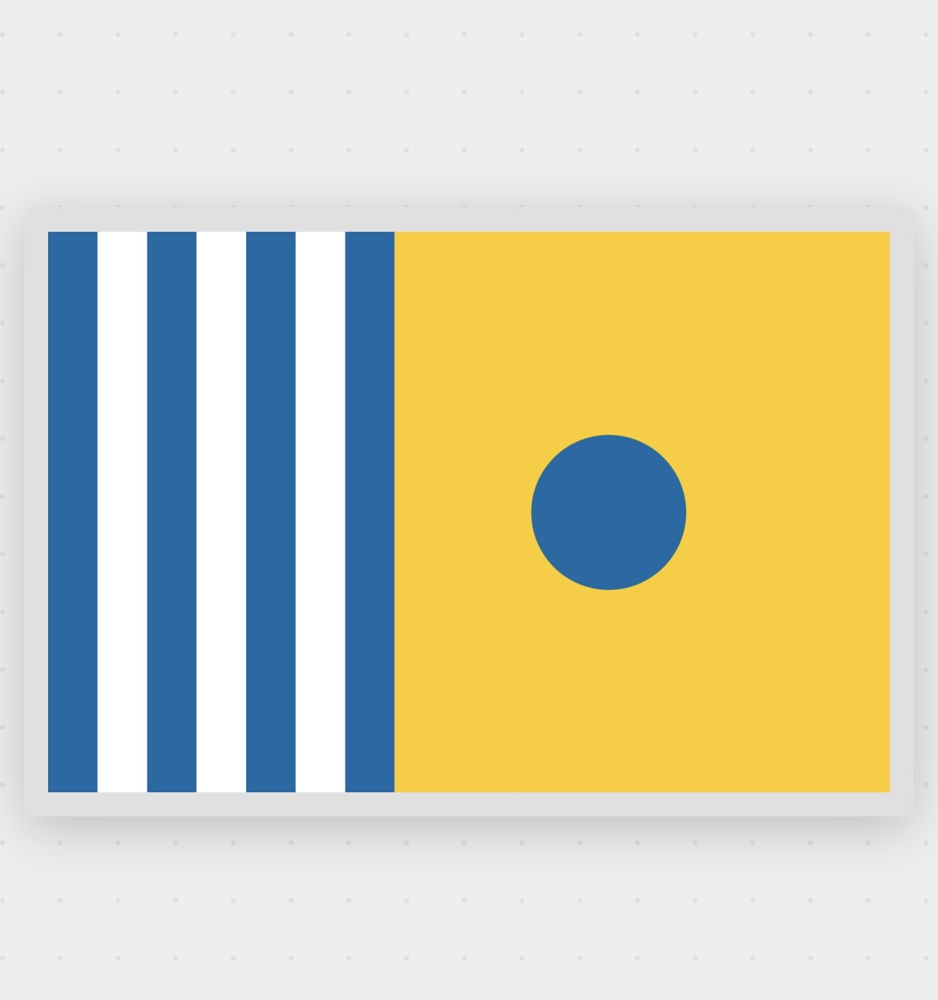
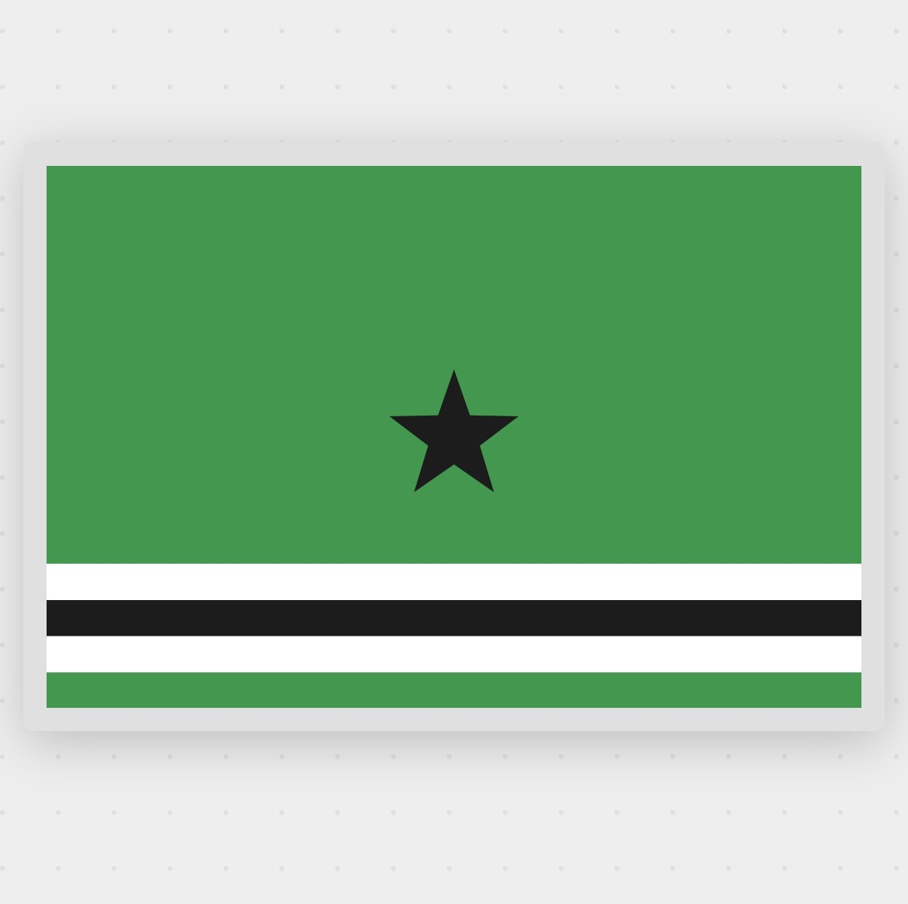
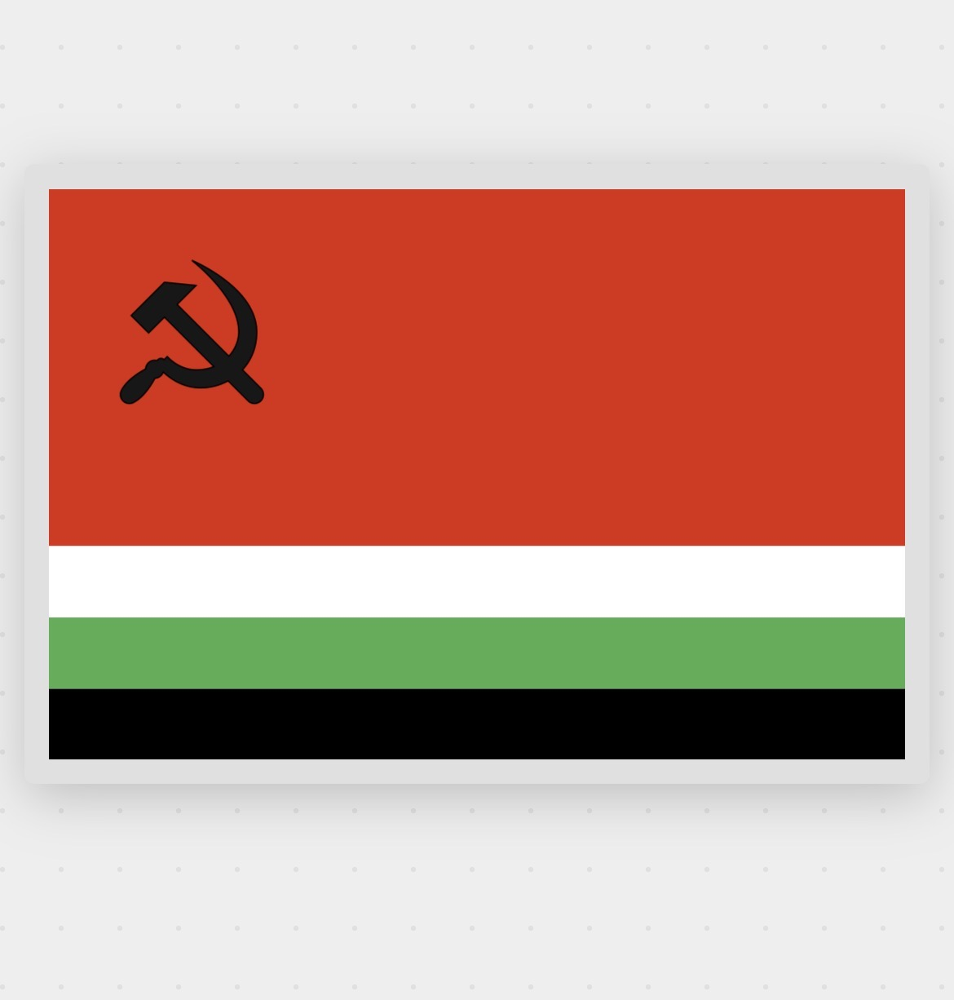
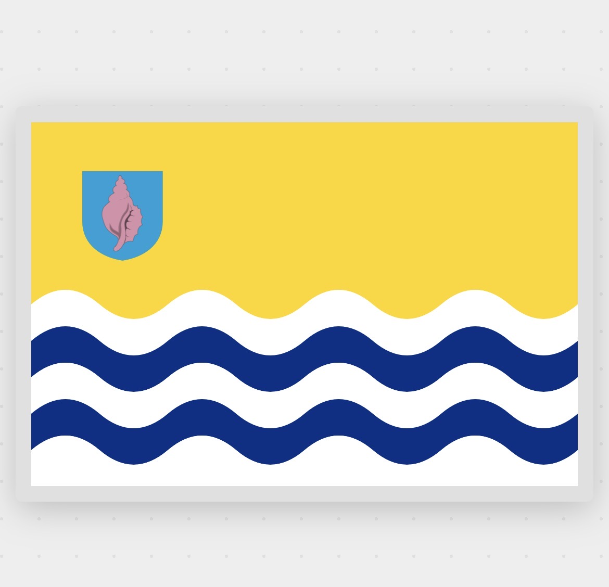
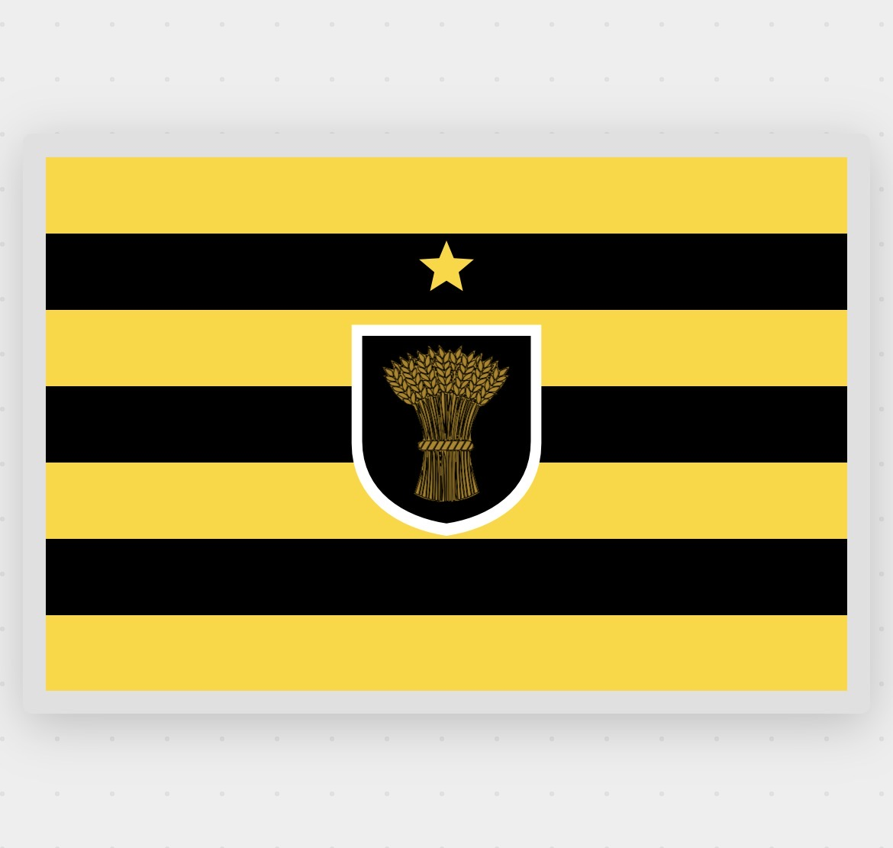
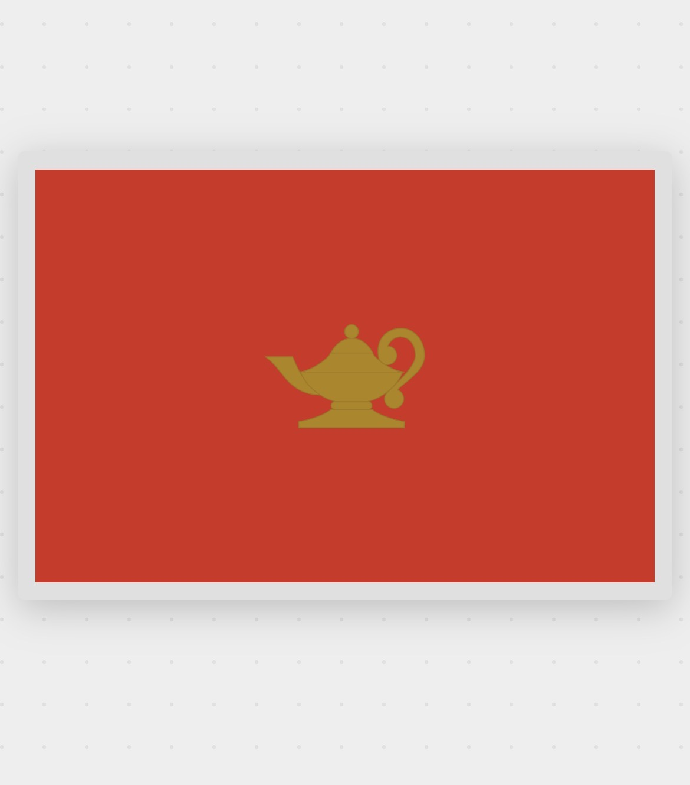
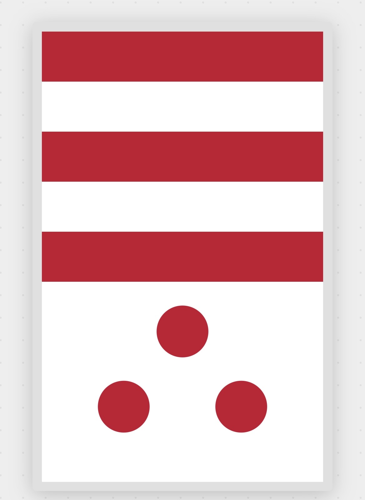

Scroll down to browse flags made with Quick Flags
Quick Flags · Flag Design Studio
Flags Made in the Editor
Flags made in Quick Flags — exploring heraldic traditions, pirate history, Pan-African symbolism, fantasy world-building, nautical signal codes, political iconography, and oceanic island design. Every flag below was built entirely in the editor, no Photoshop or SVG coding required. Each entry explains the flag type's history and tradition, then gives you the steps to make your own.
This gallery covers eight categories of flag design: pirate and maritime, fantasy battle standards, heraldic coat of arms, fantasy world-building, animal and pastoral, nautical signal flags, Pan-African and political traditions, and oceanic island republics. Each section explains what makes that style of flag distinctive — the history, the visual conventions, the symbolism — and then gives you the specific editor steps to recreate it. All flags were designed in Quick Flags in a single session, using only the built-in layer types and emblem library. No external assets, no coding, no design background required.
Featured — Pirate & Maritime

Pirate Flag Tradition
The Red Jolly Roger
Pirate · Maritime
Pirate flags — called Jolly Rogers — emerged in the early 1700s as psychological weapons. The familiar white skull on black signalled that pirates would spare surrendering crews. A red flag meant the opposite: no quarter. Caribbean pirates and North African corsairs flew crimson to issue a final, absolute warning.
To make one: set a solid black background, open the Emblems panel and search "skull" in the Human category, then add a blade from Weapons. Set both to red. Two emblems on a black field — that's the whole flag.
Featured — Fantasy Battle Standard

Fantasy Battle Standard
The Skull & Laurels Standard
Fantasy · Warhammer-Style
Battle standards with a central pale — a wide vertical band flanked by darker outer bands — are a classic military flag structure. This one draws on the Warhammer universe, where Gothic skulls wreathed in Roman laurels represent the Imperium's theocratic power. The monochrome palette makes the emblem do all the work.
To make one: add a Stripes layer set to 3 vertical bands and colour them black, white, black. Open Emblems, browse the Warhammer category, and centre the skull-and-laurels badge on the white band.
Heraldic & Coat of Arms
European heraldry developed from the twelfth century as a system for identifying knights on the battlefield — when faces were hidden by visored helms, the charge on a shield was the only way to tell friend from enemy. Those visual conventions — a limited palette, bold simple shapes, and strict rules about which colours can appear together — produce flags that are immediately legible at a distance. The Quick Flags emblem library includes rampant lions, eagles, portcullises, crowns, and dozens of other traditional heraldic charges.

The Silver Lion
Heraldic · Triband
The rampant lion is the most common charge in European heraldry — it appears on the arms of Scotland, England, Norway, and hundreds of cities. Add a 3-band vertical Stripes layer (green–white–green), then search "lion" in Emblems → Animals and place it on the centre pale.

City of Lions
Heraldic · Full Arms
City flags often display a full coat of arms: a central charge flanked by animal supporters, topped by a crown. Set a blue background, then stack multiple emblems — portcullis from Structures, winged lions from Animals, a crown from Regal — positioning each layer independently.

Elephant & Castle
Heraldic · Triband
The elephant carrying a fortified tower (called a howdah) has appeared in civic heraldry since the Middle Ages — found in the arms of Southwark, Coventry, and many other boroughs. Add a crimson–white–gold triband and search "elephant" in the Animals category.

The Royal Standard
Regal · Tricolor
Royal standards traditionally use the dynasty's colours with a crown or cypher as the central charge. Purple has signified royalty since antiquity. Add an amber–white–purple triband, then browse Emblems → Regal and try different crown styles on the white centre band.
Fantasy & World-Building
Fantasy flags borrow from real heraldic traditions — diagonal splits, quartered fields, single bold symbols — but free themselves from the constraints of historical authenticity. World-builders use flags to establish a nation's character before a word of lore is written: a serpent eating its own tail tells you something very different about a faction than a crossed sword and shield. The editor's mythological and alchemical emblem categories were built for exactly this kind of work.

The Ouroboros
Fantasy · Diagonal Split
The ouroboros — a snake eating its own tail — appears in ancient Egyptian tombs, Greek alchemical texts, and Norse mythology. A diagonal split (called "per bend" in heraldry) creates dynamic tension. Add a diagonal Shapes layer, set it black and gold, then search "snake" in Emblems and place it on the divide.

The Four Houses
Fantasy · Quartered
Quartering in heraldry combines multiple coats of arms into one shield — medieval dynasties used it to show inherited kingdoms. Add a 4-quadrant Stripes layer (white and gold), then place one emblem per quarter: a crossbow (Weapons), a lion, a boar, a stag (all in Animals).

Lamp of Knowledge
Symbolic · Minimalist
Single-symbol flags follow a tradition used in many national flags — Lebanon's cedar, Japan's rising sun. Oil lamps have symbolised learning since ancient Greece. Set a terracotta background, open Emblems → Objects, search "lamp", and centre the emblem slightly above the mathematical middle for visual balance.
Animal & Pastoral
Animal flags tell a story about a place's relationship with the natural world. Coastal regions use fish and shells; farming counties use livestock and crops; forested kingdoms use deer, boars, and bears. The Quick Flags emblem library includes dozens of animals drawn in a consistent heraldic style, so a wolf and a stag placed on the same flag read as a unified design rather than a collage. The pennant shape — available as an alternative to the standard rectangle — adds a specifically medieval, campaign-standard feeling.

The Shepherd's Standard
Narrative · Pastoral
Regional flags often depict a place's agriculture rather than heraldic symbols — Swiss cantonal flags and English county banners use the animals that defined local economies. Add a white–green horizontal bicolor, then search "dog" and "sheep" in Emblems → Animals and arrange them in a loose scene.

The Eagle Pennant
Pennant · Heraldic
Pennants (triangular flags) were the standard medieval military banner — knights carried them on lances, regiments marched under pennon-tipped pikes. In the editor, change the flag shape to pennant using the Shape selector, add a green field with a red centre stripe, then search "eagle" in Emblems → Birds.

The Forest Cross
Nordic Cross
Every Nordic country uses the asymmetric cross with its vertical arm offset toward the hoist — a tradition dating back to Denmark's Dannebrog, the oldest continuously-used national flag. Add a Nordic Cross pattern layer, set the field to dark green and the cross to gold. The offset is built in.
Featured — Nautical & Maritime Signal

Maritime Signal Tradition
The Signal Code Flag
Nautical · Signal Flags
The International Code of Signals assigns a unique flag to every letter of the alphabet and every numeral, so ships at sea can spell out messages without speaking a common language. Each flag uses a bold, simple design — geometric shapes, strong contrasts, no fine detail — because they must be readable at a distance through spray and poor light. A single flag can also carry a complete meaning: "I" means "I am altering my course to port," "O" means "Man overboard."
To make a signal-style flag: use two layers — a Stripes layer for the left-side vertical bands (alternating blue and white), and a Shapes layer for the yellow right-hand field. Add a simple circle from Shapes in the yellow half. The key is bold, unambiguous contrast: naval flags were designed to be read, not admired up close.
Featured — African & Pan-African

Pan-African Flag Tradition
The Black Star Republic
African · Pan-African
The colours of Pan-African flags — green for the land, black for the people, red for the blood of those who fought for freedom, and gold for mineral wealth — were defined by Marcus Garvey's Universal Negro Improvement Association in the early twentieth century. The black star specifically evokes his Black Star Line shipping company, a symbol of African economic self-determination. It was adopted by Ghana in 1957 as the continent's first sub-Saharan nation to gain independence, and it has influenced dozens of African national flags since.
To make one: set a large green background. Add a Stripes layer at the bottom with 4 narrow horizontal bands — white, black, white, green. Place a solid black five-pointed star from Emblems → Shapes in the upper field. The star sits large and unencumbered, letting the symbolism carry without ornamentation.
Featured — Political & Revolutionary

Revolutionary Flag Tradition
The Worker's Republic
Political · Socialist
Soviet-era republican flags followed a strict visual grammar: a dominant red field representing revolution and workers' solidarity, the hammer and sickle in the upper hoist canton (the hammer for industrial workers, the sickle for agricultural peasants), and horizontal bands of national colours at the base identifying each of the fifteen Soviet republics. The formula turned a political ideology into a family of flags that were immediately recognisable as related while remaining distinct. The Azerbaijani, Georgian, and Ukrainian SSR flags all followed this template before independence.
To make one: set a large red background. Open Emblems and search "hammer" or browse the Political or Tools categories — place the hammer and sickle emblem in the upper left corner of the flag and set it to black. Add a Stripes layer at the bottom with 3–4 horizontal bands in the national colours of your invented republic.
Featured — Oceanic Island Republic

Pacific Island Flag Tradition
The Conch Shell Republic
Oceanic · Island Republic
Pacific and Caribbean island-nation flags share a visual language built around the ocean they depend on. Blue and white wavy stripes represent the sea and surf; yellow or gold fields evoke tropical sunlight and prosperity; a central emblem in the canton carries the island's specific identity — a sea creature, a native plant, or a traditional object. Kiribati's flag features a frigate bird over a rising sun above wavy blue and white stripes. Tuvalu places stars on a blue field. The Cook Islands put fifteen stars on blue. The wave motif runs through nearly all of them.
To make one: set a yellow background. Add a Wavy Stripes layer at the base in deep blue and white — this is under Stripes in the layer panel. Place a shell emblem from Emblems → Animals → Sea in the upper-left canton, optionally inside a shield shape from Structures. Scale the emblem small relative to the flag field: island republic flags rarely crowd the design.
County & Regional Flags
County and regional flags across Europe tend to favour heraldic shields, agricultural symbols, and the region's traditional colours. They are modest in ambition but often striking in execution — the arms of a farming county can carry centuries of local history in a single emblem. In England, formal county flags have only been granted since 2003, when the Flag Institute began registering them; many English counties flew unofficial flags for generations before that. In Germany, Bundesland banners have used the county colours with the state arms for centuries. The pattern is consistent: colours from the ruling family's arms, a central charge from the region's economic identity.

The Wheat County Standard
County · Regional
The wheat sheaf — called a "garb" in heraldry — appears in the arms of Cheshire, several German Länder, and many agricultural counties. It signals that a region's identity is rooted in the land and harvest rather than trade or war. Add alternating yellow and black horizontal Stripes, place a shield shape from Structures at centre, then search "wheat" or "sheaf" in Emblems → Plants. A single star above marks the county seat or chief town.
Flags with Symbols
Some of the most memorable flags in the world rely on a single bold symbol against a plain field — no stripes, no extra charges, just a colour and a shape. This is the hardest discipline in flag design: the symbol has to do everything. The best examples are instantly readable, deeply meaningful, and impossible to mistake.

The Genie Lamp
Symbolic · Single Charge
The oil lamp — from Aladdin's lamp to Diogenes searching for an honest man — has been a universal symbol of knowledge, magic, and hidden power for millennia. On a flag, a single symbol on a plain field follows the design tradition of Japan (the rising sun disc), Canada (the maple leaf), and Lebanon (the cedar). Set a deep terracotta background, then find the lamp in Emblems → Objects. Centre it with a slight upward offset for visual balance — the eye naturally reads low, so a mathematically centred emblem looks slightly dropped.
Vertical Banners
Not all flags are landscape rectangles. The vertical banner format — taller than it is wide — has a long history in civic, religious, and military contexts. German town banners, Swiss cantonal flags displayed indoors, Japanese temple banners, and medieval tournament pennons all use the portrait orientation. Quick Flags supports vertical format: switch the shape in the editor to get the full canvas.

The Three Roundels Banner
Vertical · Banner Format
A roundel (a filled circle) is one of the simplest charges in heraldry and one of the most graphically powerful — Japan's flag is built on one. Three roundels arranged in a triangle is a common heraldic motif, appearing in the arms of several English families and German towns. Switch the flag to portrait orientation in the Shape selector. Add red and white horizontal Stripes to the upper half, then place three large circles from Shapes in the lower white field — arranged with two on the bottom, one above.